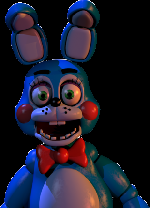

“What do we have here, someone hiding from me?”
- Toy Bonnie
- Toy Bonnie is one of the toy animatronics and one of the antagonists who first debuts in Five Nights at Freddy's 2. He is a redesign of the original Bonnie.
Physical Appearance
- Out of all of the redesigns, Toy Bonnie seems to have undergone the most drastic of changes. He is colored a bright shiny blue, with his belly, muzzle, and insides of his ears colored a pale, powder blue. He has green eyes, magenta eyelids, long eyelashes, and rosy red, blushed cheeks. He also has a white circular tail, which can only be seen when he is crawling through the Right Air Vent. He also has eyebrows, unlike the original Bonnie, and no longer has similarities to Freddy appearance-wise.
- Like the other redesigns, he is much smoother in texture compared to the original animatronics. He also has a more modernized appearance, bearing multi-jointed fingers and a hard casing, as opposed to the fabric covers of the originals. Toy Bonnie also sports a red bow tie, black button nose, whisker spots, and buck teeth, unlike his original counterpart, similar to that of a stereotypical rabbit. His eyes also appear articulated, as if he can move them freely. In a paranormal manner, his pupils grow smaller the closer he gets to the player.
- It can sometimes be seen that Toy Bonnie's feet are different from his original counterpart, each sporting a triangular shape with three, blocky toes. These features are also shared with the other new animatronics, excluding the Puppet and BB
- Like the original Bonnie, when on stage, Toy Bonnie plays a guitar, which is red and white with a black neck. However, unlike his counterpart, Toy Bonnie can be seen with his guitar while absent from the Show Stage. He can be seen holding his guitar in Party Room 3, though he is not seen with it elsewhere.
Personality
- In Five Nights at Freddy's AR: Special Delivery, Toy Bonnie seems to be sadistic and narcissistic. He also seems to think that he is a "superstar", more famous than the protagonist. His dialogues reveal that he is obsessed with popularity, and that he is also boastful, as heard when gloating about having found the player character hiding. One of his lines reveals that he is somewhat inept when it comes to counting, in that he tends to count out of order. Due to the sound of his voice, Toy Bonnie seems to act childish, hence to his bragging of being better than the player and the fact that he has such a quite high-pitched, robotic voice, that sounds similar to that of a child.

Alias
New Bonnie
Occupation
Guitarist
Affiliation
Freddy Fazbear's Pizza (1987)
Owner
Fazbear Entertainment, Inc.
Voice Provider
TBA
Mascot
Rabbit
Skin Color
Cerulean Blue
Eye Color
Lime-Green
Gender
Male
Animatronic Set
Toys